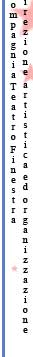
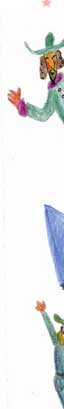
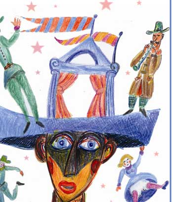
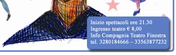

PROGRAMMA
14 15
Laboratorio Teatro Finestra – a MAR (Nostalgia del Futuro)
16
Compagnia Il Teatrone - Un Caso Fortunato
17
Compagnia Circo a Vapore - Tivvucumprà
19
Youkali
20
Compagnia Luna Nova - Morso di luna nuova
21
Compagnia Teatrale Costellazione - Il Folle
22
Ass. Senza confine - Musica, colori e sapori dal mondo
23 24
Laboratorio sperimentale Compagnia Teatro Finestra - NOcchioPinocchio
25 26
Laboratorio sperimentale Compagnia Teatro Finestra - R+G da Romeo+Giulietta
27
Colori nel Mondo - Il Recluso


